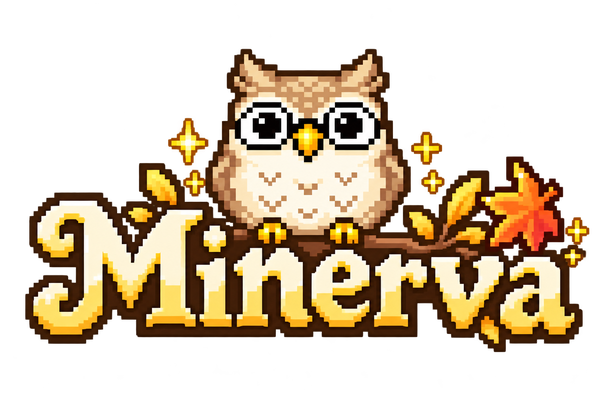
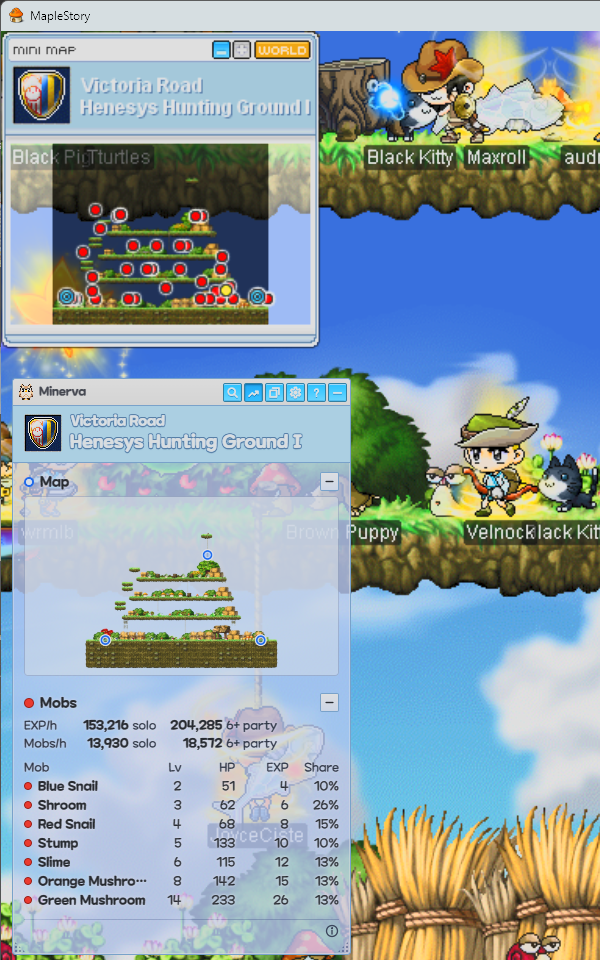
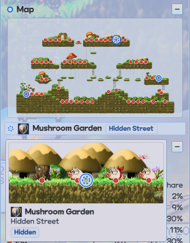
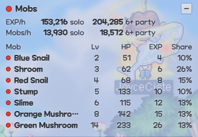
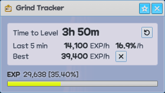
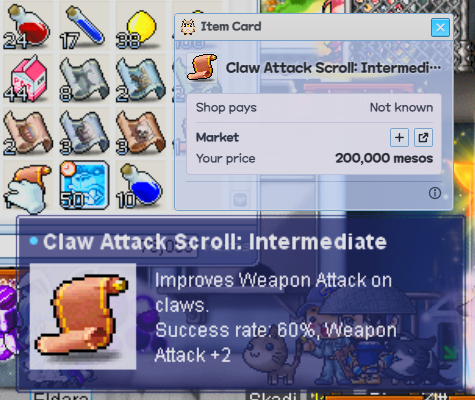
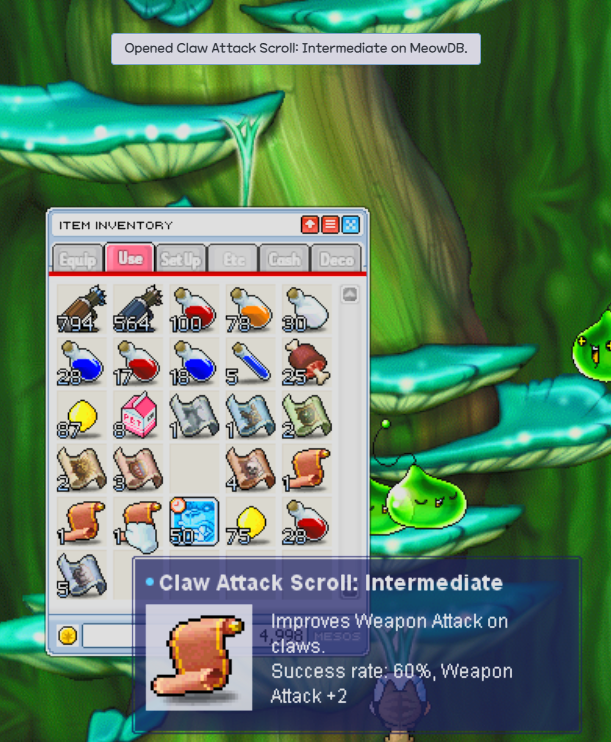
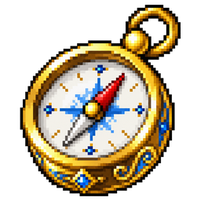
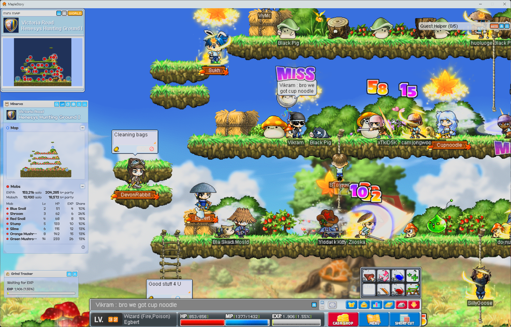

The map you're on, at a glance
A free overlay for MapleStory Classic World that shows the map you're on: every portal, even the hidden ones, its mobs, and the way to the mob you want to hunt.
- Free
- Open source
- No account
- Windows 10 & 11
On a phone? Minerva runs on a Windows PC, beside the game: open this page there to download it.
Minerva @VERSION@ · Other downloads · What's new
The files aren't code-signed, so Windows may say it "protected your PC": choose More info, then Run anyway. Play the game windowed or borderless, not fullscreen.
Minerva isn't made, endorsed or supported by NEXON. Using any third-party tool with MapleStory is at your own risk.


Every portal, even the hidden ones
The Map Preview shows the whole map you're on with every portal ringed, and lists the Hidden Portals the game doesn't show, with where each one leads.

What a map is worth
The Map Summary gives the EXP and mobs per hour you can expect there, solo or in a party, then lists every mob by level. Point at one to light its spawn points on the map.

Your pace, and your best on every map
Mark your EXP bar and the Grind Tracker shows your EXP per hour and time to level, and keeps your Personal Best on every map.

What an item is worth
Point at an item and press Ctrl+Shift+I. Its Item Card shows what a shop pays for it, beside the market prices you keep.

Any item's page in one key
Point at an item and press Ctrl+Shift+U. Item Lookup opens its MeowDB page: where it drops, and the quests that give or need it.
How it stays safe
Minerva is a third-party tool, not made or approved by Nexon. Nexon's terms forbid some third-party programs, and a penalty in Classic World applies to your whole account, MapleStory included. Using Minerva is at your own risk.
To keep that risk low, Minerva only looks at the screen:
- It captures the minimap title (and, if you choose, the EXP bar) the same way a screenshot does, and draws its own window.
- It never reads or changes the game's memory or files, and never injects anything into it.
- It never presses keys or clicks for you, and automates nothing.
Get started

Minerva
Hello! Mark your minimap's title for me once, and I'll know which map you're on from then on.
- Download and run Minerva. If Windows says it protected your PC, choose More info, then Run anyway.
- Mark the minimap title. Setup has you drag a box around its two lines, then checks it reads them.
- Play. The panel shows beside the game, and follows you from map to map.

Hotkeys
They work while the game or one of Minerva's windows is in front, and the game never sees them. Change any of them in Settings, the gear at the top of the panel.